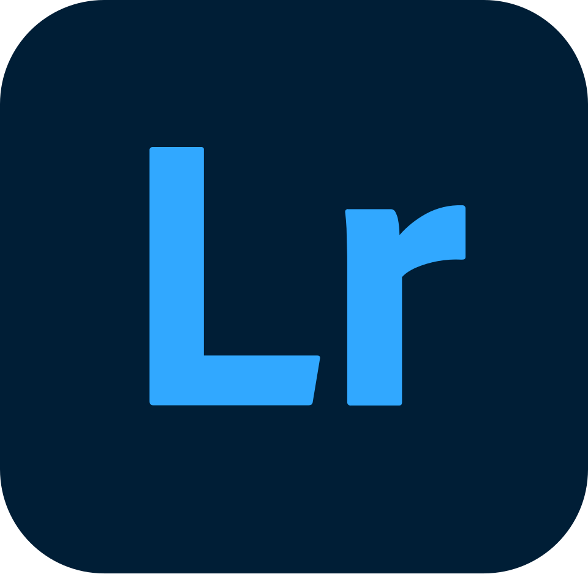
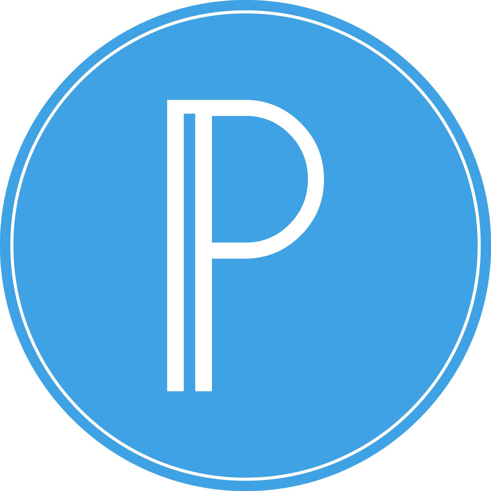
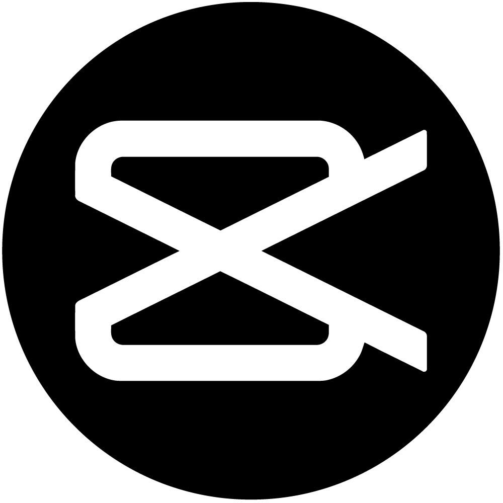
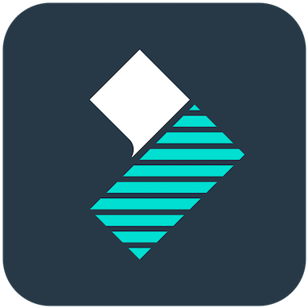
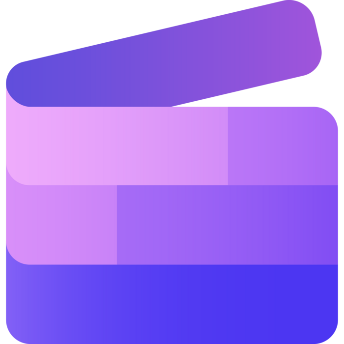
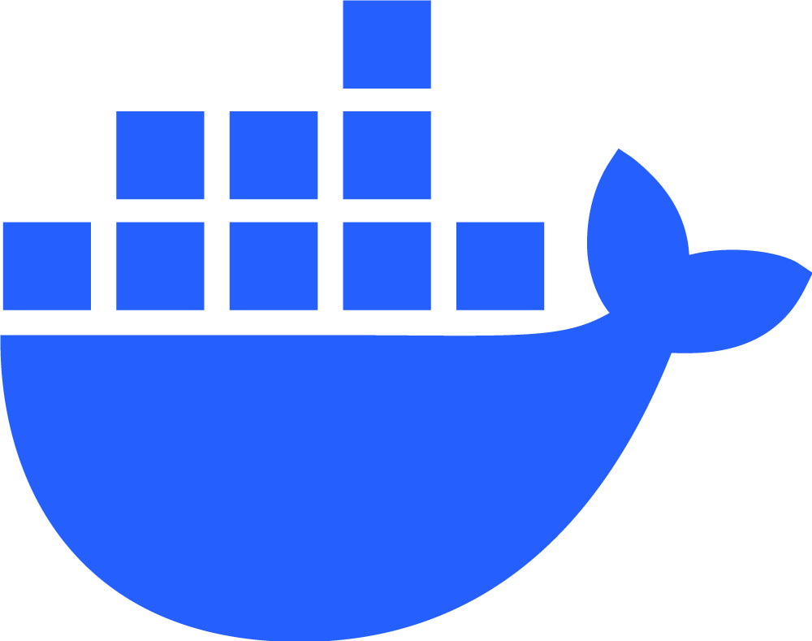

WHAT I BRING
Skills & Tools
Expertise
UI/UX Design
Graphic Design
Hardware Repair
Software Repair
Web Developer
UI/UX Design
Graphic Design
Hardware Repair
Software Repair
Web Developer
Language & Framework
HTML
CSS
JavaScript
PHP
SQL
Python
LaTeX
HTML
CSS
JavaScript
PHP
SQL
Python
LaTeX
Tools & Environment
 Figma
Figma Canva
Canva Photoshop
Photoshop Illustrator
Illustrator
Lightroom CorelDraw
CorelDraw
Pixellab
CapCut
Filmora
Clipchamp Git
Git GitHub
GitHub
Docker VS Code
VS Code Excel
Excel Word Figma Canva Photoshop Illustrator
Word Figma Canva Photoshop Illustrator Lightroom
CorelDraw Pixellab
CapCut
Filmora
Clipchamp
Git GitHub Docker
VS Code Excel Word